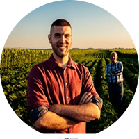
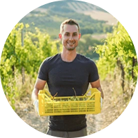
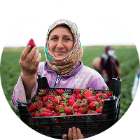

Nossas Raízes
Conheça as histórias e os rostos de quem cultiva o alimento que chega à sua mesa.

José Pereira
É um produtor rural especializado no cultivo de café, localizado no interior de Minas Gerais. Com mais de 15 anos de experiência, ele combina técnicas tradicionais com práticas sustentáveis para garantir grãos de alta qualidade. Sua produção é voltada principalmente para cafés especiais, reconhecidos pelo sabor marcante e aroma característico da região. José mantém parcerias com pequenas torrefações e cafeterias locais, fortalecendo o comércio regional e valorizando o trabalho do produtor rural.

Elizeu Souza
Pequeno produtor rural dedicado ao cultivo de cana-de-açúcar e à produção artesanal de açúcar e álcool em sua propriedade no interior de São Paulo. Trabalhando com métodos tradicionais e sustentáveis, ele valoriza cada etapa do processo — desde o plantio até a destilação — garantindo produtos de alta qualidade e origem controlada. Sua produção abastece comércios locais e apoia iniciativas regionais voltadas ao desenvolvimento do agronegócio familiar.

Maria Braga
Em Sertãozinho, distrito de Belo Horizonte, Maria carrega o legado familiar no cultivo de grãos. Com dedicação e respeito à natureza, transforma o solo em fonte de vida, produzindo milho, trigo e outros cereais de alta qualidade. Seu trabalho une tradição, sustentabilidade e amor pela terra, fortalecendo a agricultura familiar e a economia local. Ao escolher os produtos de Maria Braga, você apoia quem faz da terra um símbolo de esperança e prosperidade.
Ana Maria
Apaixonada pela pecuária, Ana se dedica com empenho à criação de gado em sua propriedade no interior de Minas Gerais, unindo tradição e cuidado em cada etapa. Com práticas sustentáveis e respeito aos animais, busca sempre a qualidade e o equilíbrio entre o trabalho no campo e a preservação do meio ambiente. Seu compromisso com a terra e com a comunidade faz dela um exemplo de força, dedicação e amor pela vida rural.